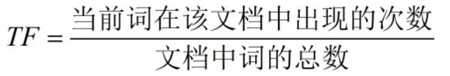
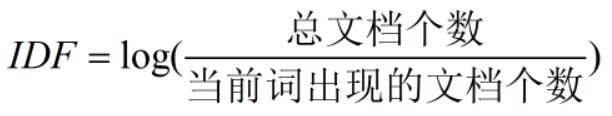

文本相似度
- 度量文本间的相似性
- 使用词频表示文本特征
- 文本中单词出现的频率或次数
- NLTK实现词频统计
文本相似度案例：
import nltk
from nltk import FreqDist
text1 = 'I like the movie so much '
text2 = 'That is a good movie '
text3 = 'This is a great one '
text4 = 'That is a really bad movie '
text5 = 'This is a terrible movie'
text = text1 + text2 + text3 + text4 + text5
words = nltk.word_tokenize(text)
freq_dist = FreqDist(words)
print(freq_dist['is'])
# 输出结果：
# 4
# 取出常用的n=5个单词
n = 5
# 构造“常用单词列表”
most_common_words = freq_dist.most_common(n)
print(most_common_words)
# 输出结果：
# [('a', 4), ('movie', 4), ('is', 4), ('This', 2), ('That', 2)]
def lookup_pos(most_common_words):
"""
查找常用单词的位置
"""
result = {}
pos = 0
for word in most_common_words:
result[word[0]] = pos
pos += 1
return result
# 记录位置
std_pos_dict = lookup_pos(most_common_words)
print(std_pos_dict)
# 输出结果：
# {'movie': 0, 'is': 1, 'a': 2, 'That': 3, 'This': 4}
# 新文本
new_text = 'That one is a good movie. This is so good!'
# 初始化向量
freq_vec = [0] * n
# 分词
new_words = nltk.word_tokenize(new_text)
# 在“常用单词列表”上计算词频
for new_word in new_words:
if new_word in list(std_pos_dict.keys()):
freq_vec[std_pos_dict[new_word]] += 1
print(freq_vec)
# 输出结果：
# [1, 2, 1, 1, 1]
文本分类
TF-IDF （词频-逆文档频率）
TF, Term Frequency（词频），表示某个词在该文件中出现的次数
IDF，Inverse Document Frequency（逆文档频率），用于衡量某个词普 遍的重要性。
TF-IDF = TF * IDF


- 举例假设:
一个包含100个单词的文档中出现单词cat的次数为3，则TF=3/100=0.03
样本中一共有10,000,000个文档，其中出现cat的文档数为1,000个，则IDF=log(10,000,000/1,000)=4
TF-IDF = TF IDF = 0.03 4 = 0.12
- NLTK实现TF-IDF
TextCollection.tf_idf()
案例：
from nltk.text import TextCollection
text1 = 'I like the movie so much '
text2 = 'That is a good movie '
text3 = 'This is a great one '
text4 = 'That is a really bad movie '
text5 = 'This is a terrible movie'
# 构建TextCollection对象
tc = TextCollection([text1, text2, text3,
text4, text5])
new_text = 'That one is a good movie. This is so good!'
word = 'That'
tf_idf_val = tc.tf_idf(word, new_text)
print('{}的TF-IDF值为：{}'.format(word, tf_idf_val))
执行结果：
That的TF-IDF值为：0.02181644599700369